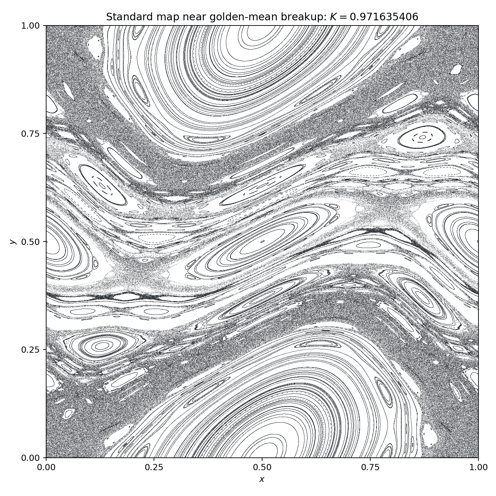

Reading seminar
We are running a UB–UPC reading seminar on Positive Metric Entropy for the Standard Map at Large Parameters (OpenAI, 23 September 2026). Our aim is to work through the proposed proof together, understand its main mechanisms, and discuss the details critically.
The standard map is a basic example of an area-preserving dynamical system in which regular islands and chaotic motion coexist. The paper addresses positive metric entropy with respect to Lebesgue area for sufficiently large parameters: roughly speaking, exponential instability on a set of positive area, rather than just on an exceptional invariant set.
We will follow the argument from finite-time derivative growth and cancellation estimates to the semimetric and multiscale framework. This page collects our meeting summaries, notes, and plans; the portrait alongside illustrates the map near golden-mean circle breakup, a different parameter regime from the paper’s large-parameter setting.
See also Figuimath’s video on the standard map.


Day 1: Wednesday, 18 November 2026 (Leader: Jordi-Lluís Figueras)
Location: Universitat de Barcelona (UB), 14:30–16:00.
Summary: We discussed the material collected in the Day 1 notes (PDF).
We introduced the standard map, its derivative cocycle, growth semimetrics, and the mean growth shortfall en(K), including an elementary proof that this shortfall tends to zero as K tends to infinity for each fixed n. We also discussed observations, the cancellation and fast-bridge product estimates, and how these ingredients enter the multiscale contradiction argument for positive metric entropy.
Day 2: Wednesday, 25 November 2026 (Leader: Marcel Guardia)
Location: Universitat de Barcelona (UB), Aula T2, at 16:00.
Summary: We discussed the material collected in the Day 2 notes (PDF).
We discussed the doubling estimate
en ≤ e2n ≤ C(en + 1/n),
and how critical dyadic scales and the laws of growth semimetrics enter the multiscale argument.
Day 3: Wednesday, 2 December 2026 (Leader: Kostiantyn Drach)
Location: Universitat de Barcelona (UB), at 14:30.